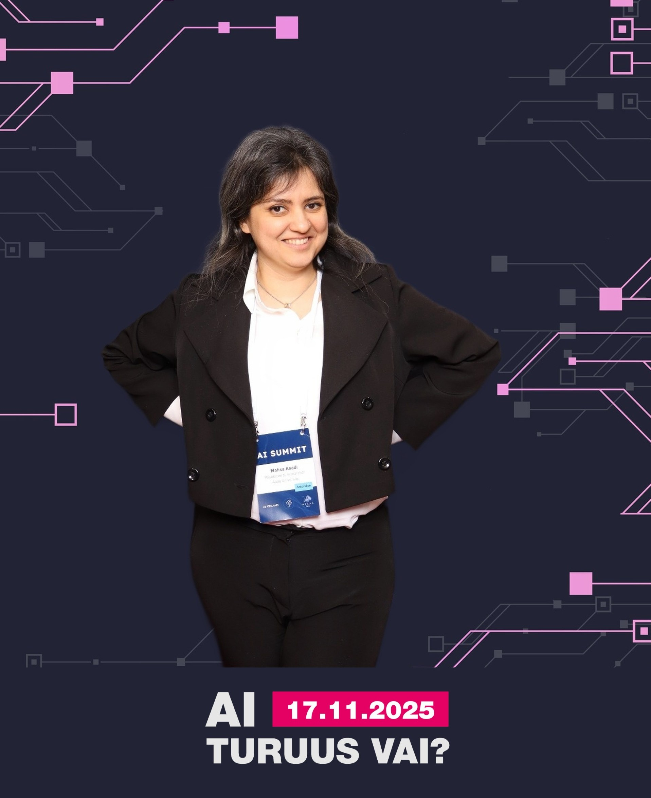
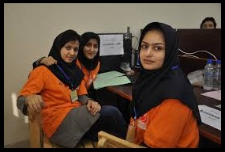
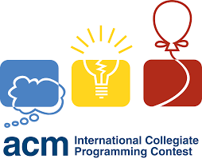

Mahsa Asadi
A Lifelong learner,
Occasional unlearner.
"Jungle doesn't know it's countless dimensions yet..." -- Sohrab Sepehri
Go to my education 
Postdoctoral Researcher2025 – Present
Supervisor: Alex Jung
Postdoctoral Researcher2023 – 2025
Supervisor: Samuel Kaski
Ph.D. in Computer ScienceOct 2018 – Nov 2022
Supervisors: Aurélien Bellet, Marc Tommasi, Odalric Maillard
M.Sc. in Artificial Intelligence2013 – 2016
Shiraz University, Iran
GPA: 18.7/20 · Ranked 3rd
Supervisor: Sattar Hashemi · Advisor: Haitham Bou-Ammar
B.Sc. in Computer Engineering2007 – 2011
Shiraz University, Iran
GPA: 16.50/20 · Ranked 4th
Diploma in Mathematics and Physics2003 – 2007
NODET — National School for Exceptional Talents, Shiraz, Iran
Machine Learning Summer School (MLSS)July 2019
Transylvanian Machine Learning Summer School (TMLSS)July 2018
My research bridges reinforcement learning and human-centered AI — specifically, how learning agents can make better decisions when interacting with a human and receiving feedback in various forms. I am interested in both the theoretical foundations of RL and human modeling leading to novel algorithms with the goal of building systems where human-AI interaction is principled and more effective in improving on sample complexity and regret bounds.
Human-in-the-Loop Decision Making
Structured Bandits with Human Assistance
Active
Mar 2025 – Present
Leveraging structure in stochastic multi-armed bandit problems to optimize the use of human feedback. The human is modeled as a bounded-rational oracle capable of detecting arms deviating beyond a threshold from the optimal. The goal is to balance exploration and querying to efficiently eliminate suboptimal arms and minimize regret. Current focus: bandits with Lipschitz structure.
BanditsHuman FeedbackLipschitzRegret Minimization
Human-Guided Near-Optimal Regret Bounds
Completed
Nov 2024 – Mar 2025
Investigated whether side information from a bounded human oracle can improve theoretical guarantees of reinforcement learning. Focused on Upper Confidence Reinforcement Learning (UCRL): proposed an initial realistic user model and improved the regret guarantee of UCRL, providing a theoretical bound on the gain achievable through human assistance.
UCRLHuman OracleRegret BoundsTheory
Lowering Cognitive Burden in RLHF for Drug Design
Completed
Summer 2023 – Summer 2024
Proposed preferential feedback types to reduce cognitive burden on human annotators, leveraging the insight that humans find it easier to compare two instances than to evaluate a single one. Introduced a user model to effectively learn the reward using these new query types.
RLHFDrug DesignCognitive LoadReward Learning
Theoretical Reinforcement Learning
Federated GTVMin Stochastic Multi-armed Bandit
On Pause
Aug 2025 – Oct 2025
Proposed a Best Arm Identification (BAI) approach utilizing neighbouring agent estimates in a decentralized network of regret-minimizing agents. Employs a global total-variation-based minimization strategy as a recommender, establishing a baseline for BAI with minimal regret in federated settings.
Federated LearningBanditsBAIDecentralized
Upper Confidence Reinforcement Learning exploiting state-action equivalence
Completed
2019
Introduced a notion of similarity of state-action pairs based on the behavior of transition structures in order to reduce the regret bound of current approaches in reinforcement learning with single trajectory and unknown MDP. Proposed a method of clustering to group state-action pairs and aggregate group samples.
UCRLState-Action EquivalenceClusteringMDP
Online Personalized Mean Estimation in Collaboration
Completed
2021 – 2022
In a network of agents each solving a personalized mean estimation problem, each agent receives a sample directly from its distribution and chooses a neighbour to communicate with. Using the Optimism in the Face of Uncertainty principle, proposed an algorithm to estimate the class of similar agents for each, with theoretical guarantees on class estimation and convergence time complexity.
Multi-agentMean EstimationOFUCollaboration
Earlier Projects (click to expand)
Distributed Multi-task Learning (M.Sc. Thesis)
2015 – 2016
We have solved the optimization problem of Multi-task learning in a distributed fashion while including the theoretical analysis of extending the framework on Policy Gradient Reinforcement Learning problems. We have reduced the convergence time of the algorithm and the memory consumption of each agent which makes this approach suitable for big data problems.
Multi-task LearningDistributedADMMPolicy Gradient
Online Face Recognition and Tracking
2016
We have developed an online face recognition software. After some preprocessing (illumination reduction and aligning the face) on each image of the video stream, we extract discriminative features and train a generative model so as to recognize the identity of passing individuals. Our approach is fast enough to be used for online processing.
Computer VisionFace RecognitionOnline Learning
Facial Expression Detection
M.Sc. course project
Our goal was to guess human emotions using facial expressions. Employed image processing techniques to extract initial features and used epsilon-SVR to transfer them into a more discriminative space. A model for facial emotion detection was constructed by SVM that returns the probability of each emotion category.
Emotion RecognitionSVMComputer Vision
Predicting Excitement for DonorsChoose.org —
KDD Cup 2014 — Top 25%
2014
Given projects' information from DonorsChoose.org, predicted how exciting each project is. Using data mining techniques, extracted relevant and discriminative features. Investigated sampling methods to overcome the imbalanced dataset problem and applied random forest, naive bayes, and other methods.
Data MiningClassificationImbalanced Data
Malware Detection using XCS
M.Sc. course project
The goal was to distinguish malicious and benign binary files using: 1) XCS (RL-based Genetic Algorithm) and 2) N-gram based feature weighting using Genetic Algorithm.
SecurityGenetic AlgorithmXCS
Fuzzy Rule-Based Classification System
M.Sc. course project
Learned the rule weights of a fuzzy rule-based classification system using a three-step greedy simulated annealing approach. This reduces the number of rules required while remaining fast and efficient.
Fuzzy LogicSimulated AnnealingClassification
Behavior-Selection by Emotions and Cognition in a Multi-Goal Robot Task
B.Sc. Project
Designed a learning agent that finds a policy to live longer while encountering conflicting situations, implementing a reinforcement learning-based agent that maintains high performance while satisfying conflicting goals.
Reinforcement LearningRoboticsMulti-goal
Publications

Near-optimal regret bounds with human assistance
Model-Based Reinforcement Learning Exploiting State-Action Equivalence
Collaborative Algorithms for Online Personalized Mean Estimation
Virtual Laboratories: Domain-agnostic workflows for research
Identifying structure in online and collaborative learning problems
Distributed Multi-task Learning
Summer 2024
Inverse Reinforcement Learning for Drug Design
A. Honarvar · Master Internship
2008 – 2015
Teaching Assistant · Shiraz University
Advanced ML, ML, Artificial Intelligence, Algorithm Design, Discrete Mathematics, Fundamentals of Programming
2012 – 2014
Lecturer · Introduction to Computer Science,
IOI &
ACM — Farzanegan High School
2008 – 2010
Lecturer ·
IOI &
ACM — Farzanegan High School
Spring 2008
ACM class for freshmen · Shiraz University
Earlier Research Positions
2017
Research Internship · Inria Lille – Nord Europe, SequeL team (4 months)
2016
Shiraz University Center of Intelligent Vision and Image Processing (6 months)
2014 – 2016
Shiraz University Machine Learning Lab
2013 – 2014
Shiraz University Image Processing and Vision Lab
Recent
2019
Best Paper
★Best Student Paper · ACML 2019
2019
Scholarship
Accommodation Scholarship · MLSS 2019
2018
Best Poster
Best Poster · TMLSS 2018
2018
Scholarship
Full Scholarship · TMLSS 2018
Early Career
2016
Ranking
Ranked 3rd · AI Major, Shiraz University
2014
Ranking
Top 2% · Iranian PhD Entrance Exam (AI)
2014
Competition
1st Place · IranOpen RoboCup 2D Simulation League (as research supervisor)

ACM-ICPC · 2010

Scintillants → RSM Team
Competition
★10th Place · Asia Regionals, Sharif University (90 teams)
Feel free to reach out — I'm always happy to chat about research, collaborations, or ideas.